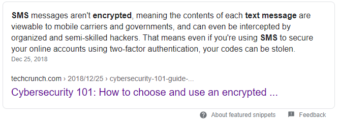
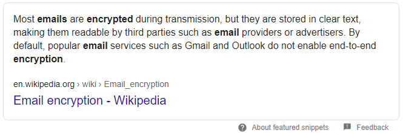

Why SMS is bad
[1]
SMS is bad? You said? Yes. It is bad. SMS messaging
is bad because...

So, you believe using two-factor authentication is
way more secure? Yes and No.
For "Yes", you can definitely make your account safer.
But "No", if your two-factor authentication code is
sent by SMS, it will be stolen and your account will
possibly be gone in a few seconds.
Solution (For devs)
You can use end-to-end encrypted messaging app, email
and many more to protect your code.
Some of the examples include "Whatsapp", "Line" and so
on. If you love games, I'm sure you have used "Steam"
as well. Steam has an app for two-factor authentication
as well.
Sending the codes through email is not a bad option as
well (as long as you trust the service provider, eg.
Google for Gmail).

References
[1]https://techcrunch.com/2018/12/25/cybersecurity-101-guide-encrypted-messaging-apps/#:~:text=SMS%20messages%20aren't%20encrypted,your%20codes%20can%20be%20stolen.